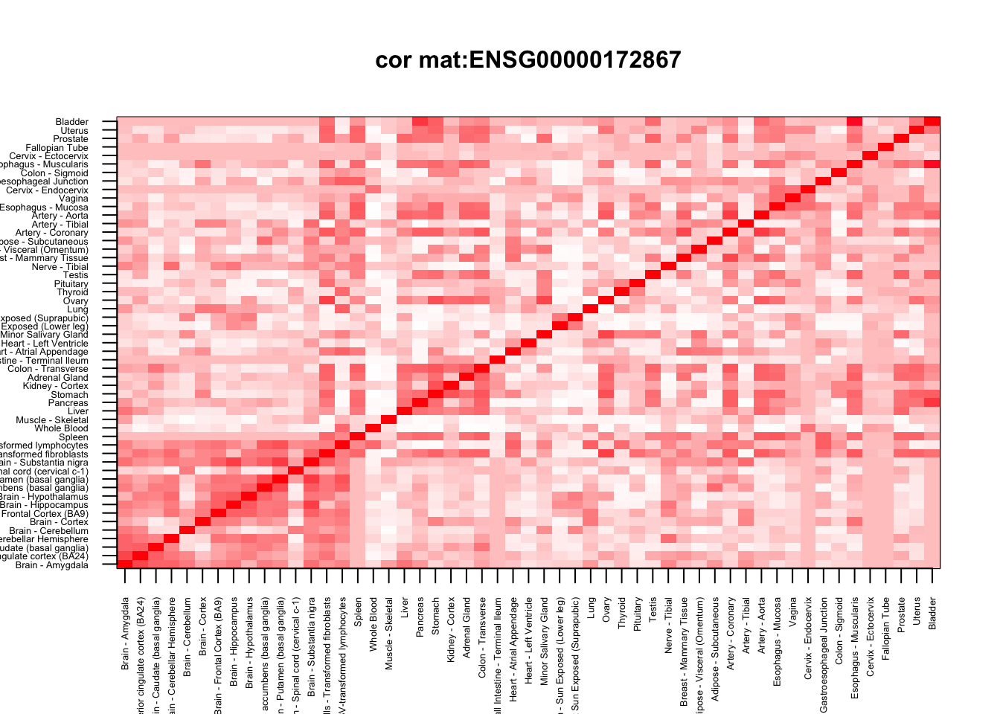
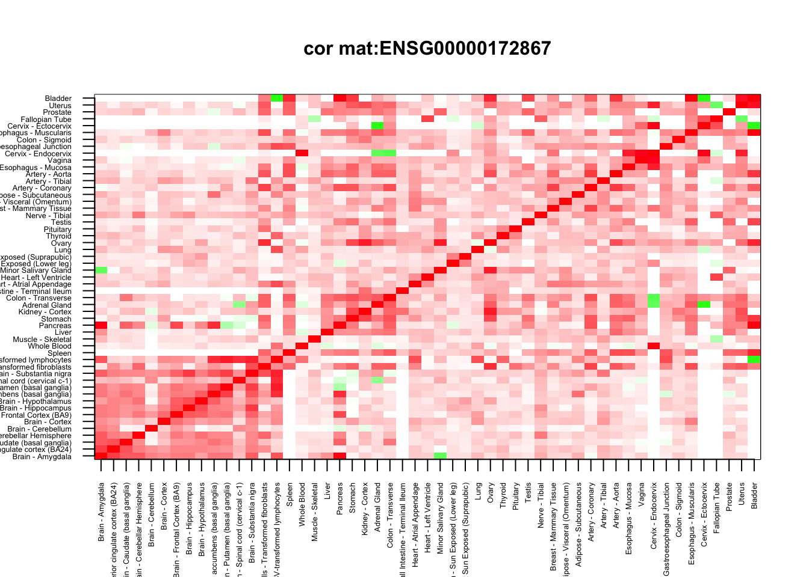
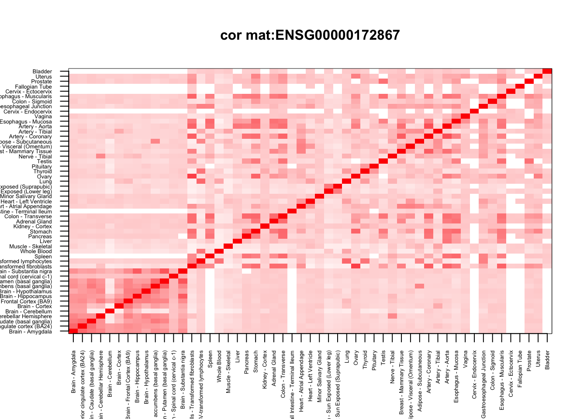

Genewide Corshrink vs Tissue wide CorShrink
Kushal K Dey
5/28/2017
Introduction
In this script, we present an example of how a genewide CorShrink output looks like in comparison with a tissue-wide CorShrink output.
name <- "ENSG00000172867"
gene_tissue_wide_corshrink <- get(load("../output/genewide_ash_out_tissue_mat_corshrink_halfuniform.rda"))
tissuewide_corshrink <- get(load("../output/ash_cor_only_voom_pearson_halfuniform_gtex_tissues.rda"))
genewide_corshrink <- get(load("../output/genewide_ash_out_tissue_mat.rda"))
cor_data <- get(load("../output/cor_tissues_non_ash_voom_pearson.rda"))
We check the dimensions
dim(gene_tissue_wide_corshrink)
## [1] 53 53 16069
dim(genewide_corshrink)
## [1] 53 53 16069
dim(tissuewide_corshrink)
## [1] 53 53 16069
Now we choose a gene and look at the different types of CorShrink plots for the different approaches.
common_samples <- get(load("../output/common_samples.rda"))
gene_names <- as.character(read.table(file = "../data/GTEX_V6/gene_names_GTEX_V6.txt")[,1])
gene_names_1 <- as.character(sapply(gene_names, function(x) return(strsplit(x, "[.]")[[1]][1])))
person_label=read.table("../data/GTEX_V6/person_identifier_labels_with_numbers.txt");
samples_id <- read.table(file = "../data/GTEX_V6/samples_id.txt")[,1]
samples_person <- sapply(samples_id, function(x) return(paste0(strsplit(as.character(x), "-")[[1]][1:2], collapse ="-")))
tissue_labels <- read.table(file = "../data/GTEX_V6/samples_id.txt")[,3]
unique_persons <- unique(samples_person)
unique_tissues <- unique(tissue_labels)
Sample correlation
First the sample correlation
numg <- grep(name, gene_names_1)
cor_mat <- diag(1,53)+cor_data[,,numg]
col=c(rev(rgb(seq(1,0,length=1000),1,seq(1,0,length=1000))),
rgb(1,seq(1,0,length=1000),seq(1,0,length=1000)))
image(as.matrix(cor_mat)[order_index, order_index],
col=col, main=paste0("cor mat:", name), cex.main=1,
xaxt = "n", yaxt = "n", zlim=c(-1,1))
axis(1, at = seq(0, 1, length.out = ncol(cor_mat)), labels = U[order_index], las=2, cex.axis = 0.4)
axis(2, at = seq(0, 1, length.out = ncol(cor_mat)), labels = U[order_index], las=2, cex.axis = 0.4)

Tissue wide CorShrink
Next the tissuewide corshrink
numg <- grep(name, gene_names_1)
col=c(rev(rgb(seq(1,0,length=1000),1,seq(1,0,length=1000))),
rgb(1,seq(1,0,length=1000),seq(1,0,length=1000)))
image(tissuewide_corshrink[order_index, order_index, numg],
col=col, main=paste0("cor mat:", name), cex.main=1,
xaxt = "n", yaxt = "n", zlim=c(-1,1))
axis(1, at = seq(0, 1, length.out = ncol(cor_mat)), labels = U[order_index], las=2, cex.axis = 0.4)
axis(2, at = seq(0, 1, length.out = ncol(cor_mat)), labels = U[order_index], las=2, cex.axis = 0.4)

Gene wide CorShrink
Next the genewide corshrink
numg <- grep(name, gene_names_1)
col=c(rev(rgb(seq(1,0,length=1000),1,seq(1,0,length=1000))),
rgb(1,seq(1,0,length=1000),seq(1,0,length=1000)))
image(genewide_corshrink[order_index, order_index, numg],
col=col, main=paste0("cor mat:", name), cex.main=1,
xaxt = "n", yaxt = "n", zlim=c(-1,1))
axis(1, at = seq(0, 1, length.out = ncol(cor_mat)), labels = U[order_index], las=2, cex.axis = 0.4)
axis(2, at = seq(0, 1, length.out = ncol(cor_mat)), labels = U[order_index], las=2, cex.axis = 0.4)

Gene and Tissue wide CorShrink
Finally, both the gene and the tissue-wide corshrink
numg <- grep(name, gene_names_1)
col=c(rev(rgb(seq(1,0,length=1000),1,seq(1,0,length=1000))),
rgb(1,seq(1,0,length=1000),seq(1,0,length=1000)))
image(gene_tissue_wide_corshrink[order_index, order_index, numg],
col=col, main=paste0("cor mat:", name), cex.main=1,
xaxt = "n", yaxt = "n", zlim=c(-1,1))
axis(1, at = seq(0, 1, length.out = ncol(cor_mat)), labels = U[order_index], las=2, cex.axis = 0.4)
axis(2, at = seq(0, 1, length.out = ncol(cor_mat)), labels = U[order_index], las=2, cex.axis = 0.4)

This R Markdown site was created with workflowr